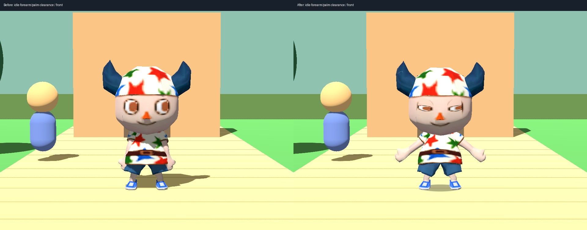
Previous floating jump:
Candidate with planted crouch, takeoff, airborne body/head motion, collision-selected compression and recovery:
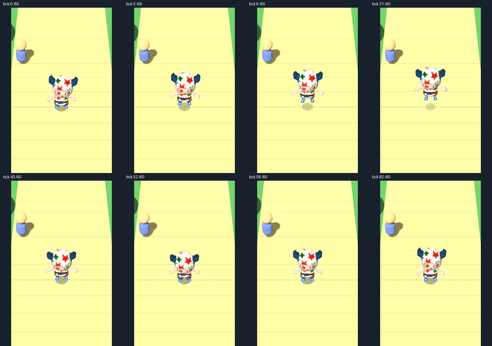
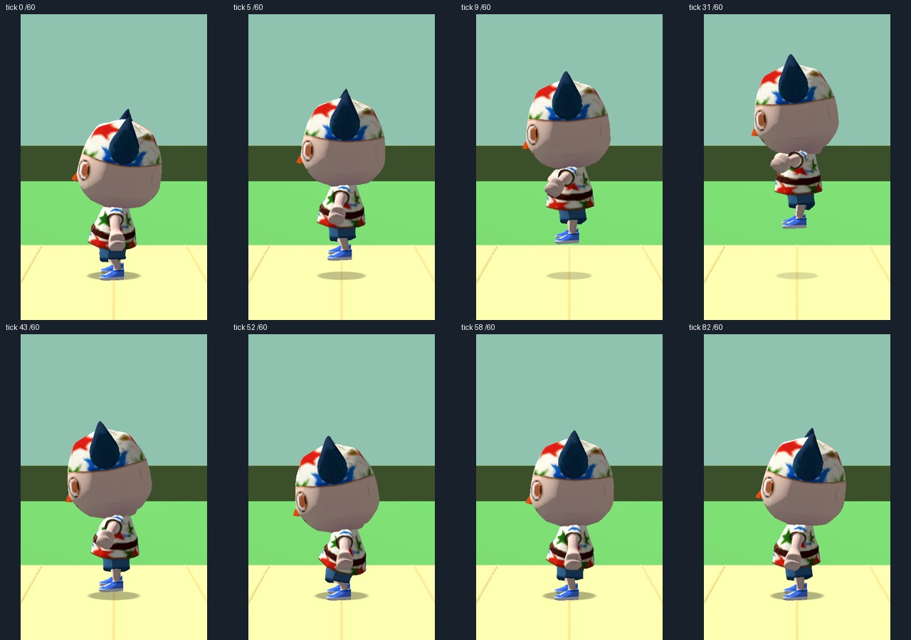
Opus 5.5 max approved the final prototype in round7, including the landing-to-run correction. Exact game likeness and original sound fidelity remain open.
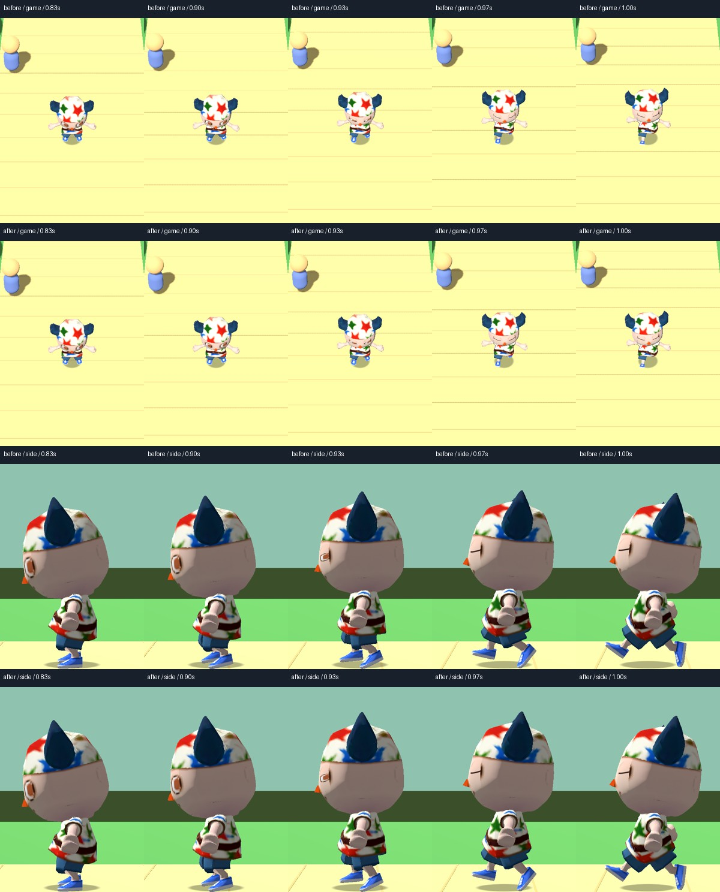
Prior approved version left; final candidate right. The same movement input starts three ticks after contact.
Original idle left, quieter idle right. Hip motion is halved and head motion is about 52% of the original; loop timing is preserved.
Candidate 1ade974755c5 received final independent Opus 5.5 max prototype approval. Rounds 1, 2, 3 and 4 were rejected. Round 5 approved the prototype; round 6 approved its small contact-depth polish.
64 seconds at normal speed: standing, running, axe, raised platform, sprint, midair steering, net and lower-floor jumps. Each has game, closer game, side and front views. Cyan/yellow lines show the knee chains. Inspection views hide tree canopies and trunk meshes; floor, contact physics and the character are unchanged.
Baseline left and current candidate right, first four scenarios, 32 seconds.
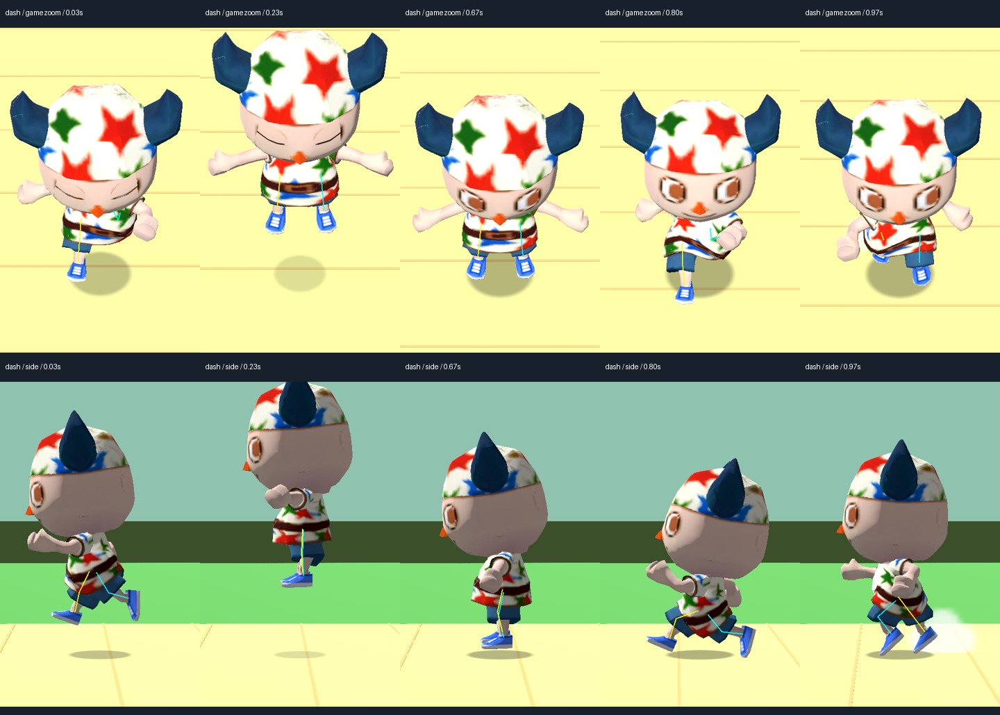
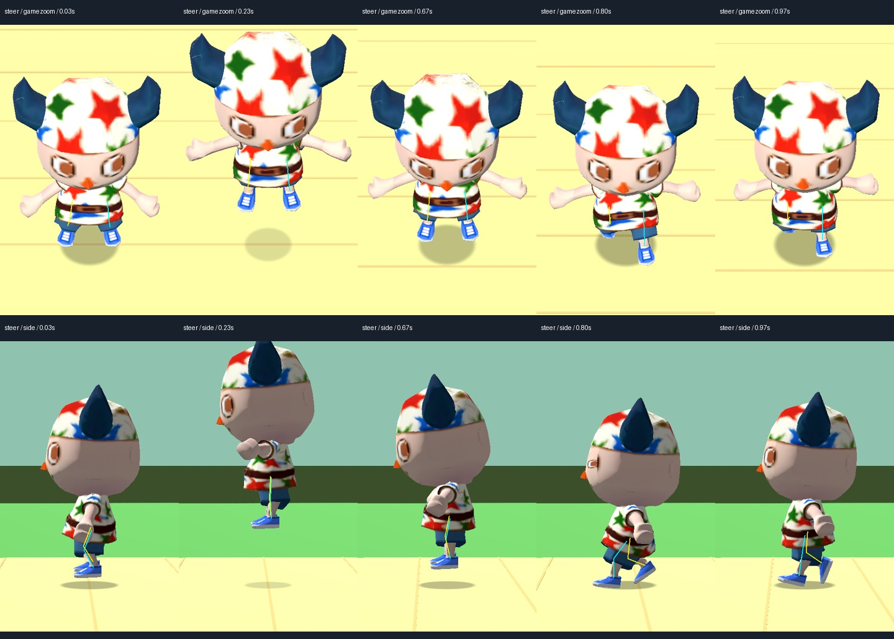
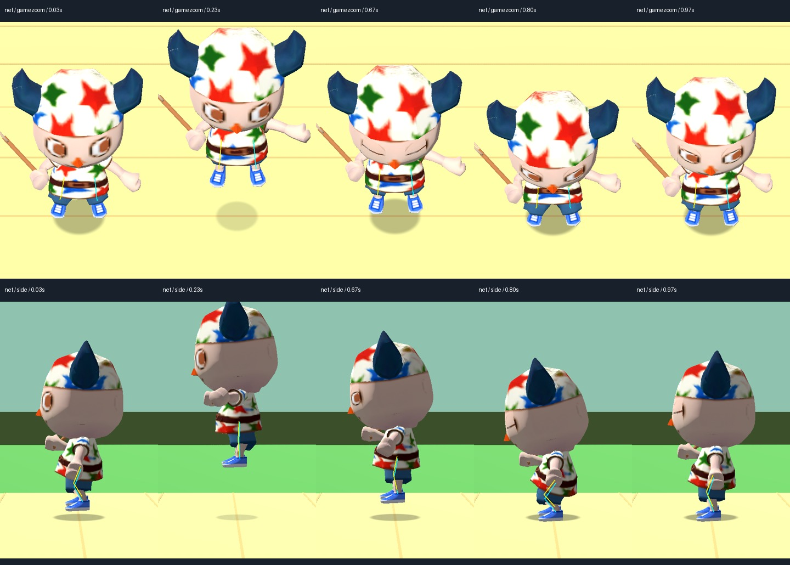
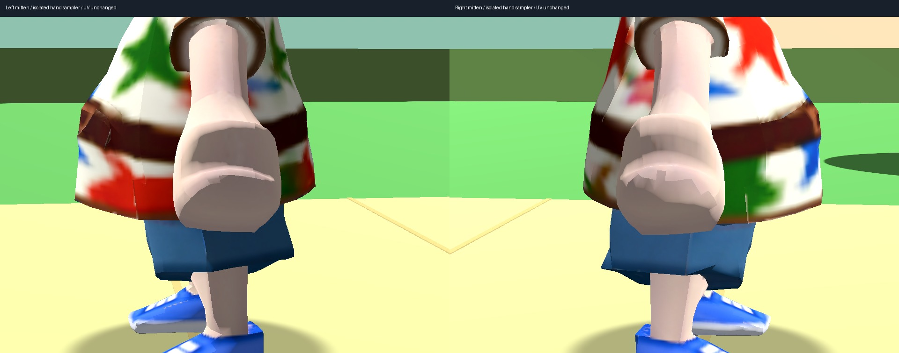
Opus round 1: rejection · Opus round 2: rejection · Opus round 3: rejection · Opus round 4: rejection · Opus round 5: prototype approval · Opus round 6: prototype approval · Opus round 7: prototype approval · 2,552-pose tool and regrip clearance check
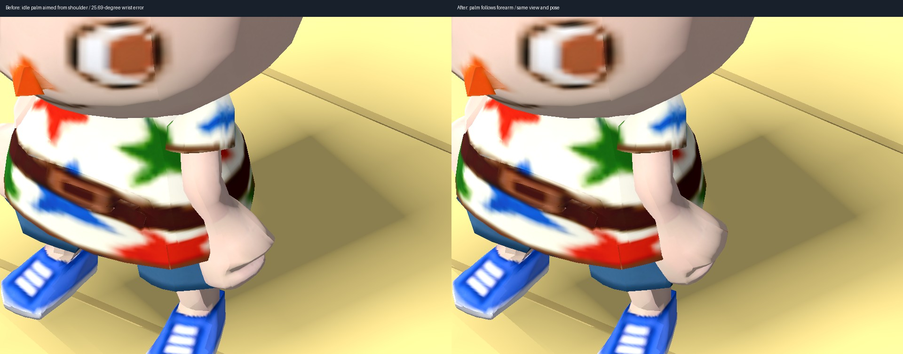
Space or touch Jump. Authored prototype addition: anticipation, tuck and landing; one grounded launch and one landing cue.
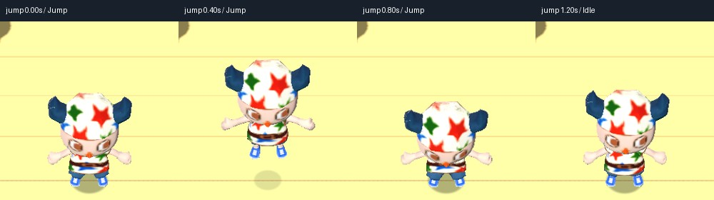
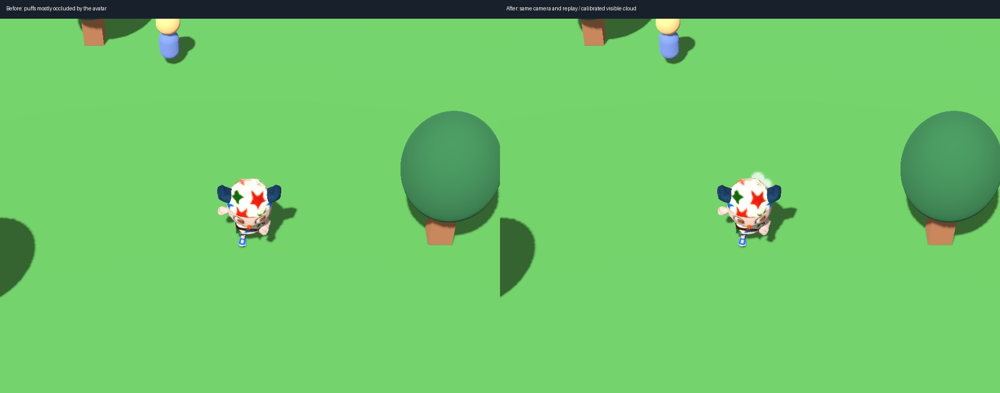
One dry sprint puff per footfall, source motion and 18-update lifetime. Cloud masks are authored approximations. Water, leaves, snow and sand use separate payloads.
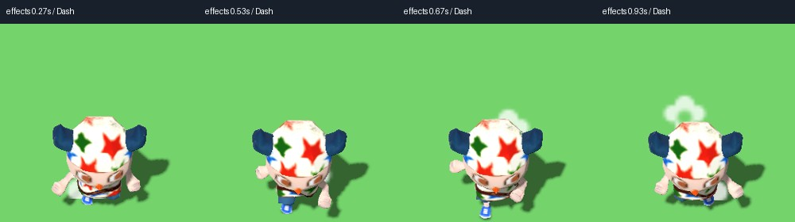
Original-game excerpt, with music mixed in:
Previous local synthesis:
Current local synthesis: grass, path, snow, sand, water, leaves, indoor, skid, twice each. Source banks/cadence are checked; exact original timbres remain open.
Walk around in the live demo · Issue and test results


Full view retained; original input and capture settings are uncertain. Exact likeness remains open.